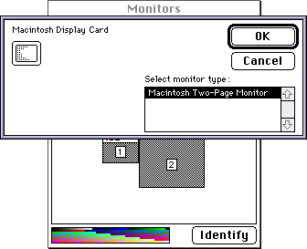
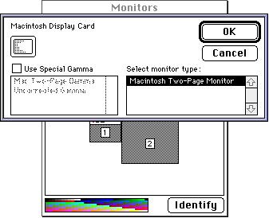
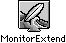

Legacy Document
Important: The information in this document is obsolete and should not be used for new development.
Important: The information in this document is obsolete and should not be used for new development.


Designing the User Interface for a Monitors Extension
When the user clicks the Options button, the Monitors control panel displays the Options dialog box for the selected monitor. The Options dialog box contains standard controls that the Monitors control panel provides, such as the OK and Cancel buttons. Beneath these two buttons is a scrollable list of monitor types if the selected monitor belongs to a family of monitors. Beneath the icon is a scrollable list of gamma tables if the user is a superuser (a very knowledgeable user; a user indicates superuser status by pressing the Option key while clicking the Options button). These items are also defined by the Monitors control panel.If you provide a monitors extension for your video card, the Monitors control panel adds any controls you define beneath the two scrollable lists, if one or both are displayed, or beneath the Cancel button. Figure 8-11 shows the Options dialog box for the Macintosh display card.
Figure 8-11 An Options dialog box with standard controls
 Figure 8-12 shows the Options dialog box for the Macintosh display card as it appears when the user presses the Option key while clicking the Options button.
Figure 8-12 An Options dialog box with superuser controls
 To provide the user interface for your video card's feature, you define a rectangle resource of type
'RECT'specifying the amount of space you need to display your controls and an item list resource of type'DITL'specifying the controls themselves.At the upper-left corner of the Options dialog box, the Monitors control panel displays the name of your video card and an icon representing it. The Monitors control panel defines the coordinates of these items. You must supply your video card's name in a required card resource of type
'card'(see "Creating a Card Resource for a Monitors Extension" on page 8-51). You can optionally provide one or more members of an icon family (with resource ID -4064) that define an icon for your video card. If you do not provide icon resources with this resource ID for this purpose, the Monitors control panel displays the icon defined in thesResourcedata structure in the ROM on your video card. If your video card does not supply a default icon in the ROM, the Monitors control panel displays a generic monitors icon.You can also supply an additional icon family to specify the icon that the Finder uses to represent your monitors extension file. The icon family resources are
'ICN#','ics#','icl8','icl4','ics8', and'ics4'. When creating an icon for a monitors extension, design it so that it is square, except include at the bottom of the icon a tab-like form, indicating that the file the icon represents is an extension. See the chapter "Finder Interface" in Inside Macintosh: Macintosh Toolbox Essentials for information on how to create an icon family. Figure 8-13 shows an icon of type'icl8'for the monitors extension file supplied with the SurfBoard video card.Figure 8-13 The SurfBoard monitors extension icon
 If you wish, you can design two sets of controls for your monitors extension: one set for ordinary users and one for superusers. When a user indicates superuser status by holding down the Option key while clicking the Options button in the Monitors control panel, the Monitors control panel notifies your monitors extension function to display the superuser controls. For more information, see "Creating an Item List Resource for a Monitors Extension" beginning on page 8-54.